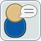

Aquesta pàgina recull els recursos lingüístics per a traductors que Softcatalà ha desenvolupat en el transcurs de la seva feina.
Publicant aquests recursos, Softcatalà vol posar la seva experiència i coneixements a l'abast de tothom qui vulgui escriure programes en català, traduir-los d'altres llengües, o simplement per aquells a qui els serveix com a eina de consulta.

Guia d'estilEstableix les normes que s'han d'aplicar a totes i cadascuna de les traduccions que es fan a Softcatalà. |
Memòries de traduccióBases de dades que conten el text original d'un programa i la seva traducció al català. |
Recull de termesGlossaris que recullen la terminologia utilitzada en diferents projectes. |
Adaptador a variant dialectal valencianaAdaptador de la variant general en català a la variant valenciana. |